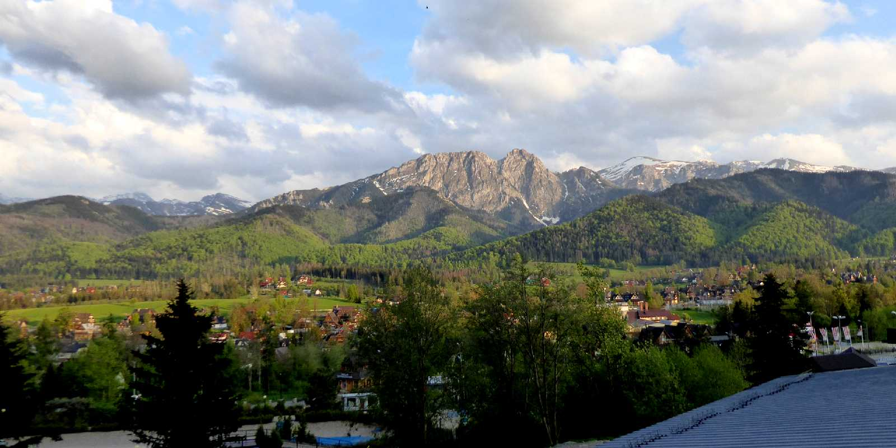
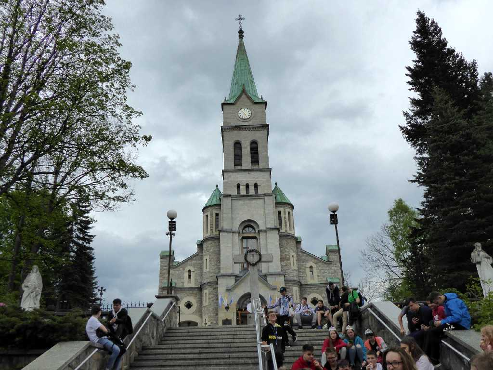
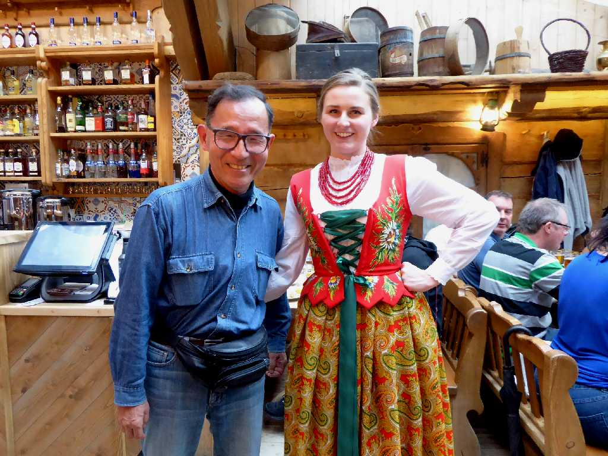
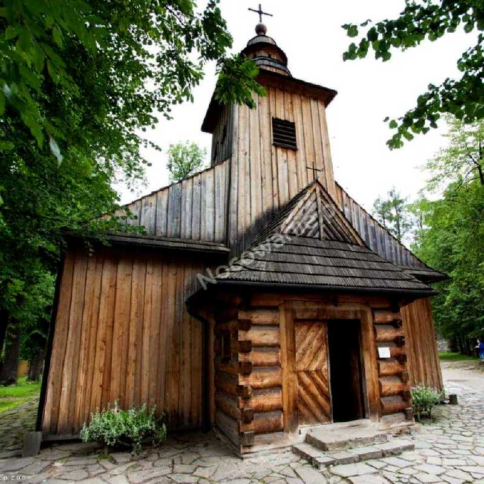
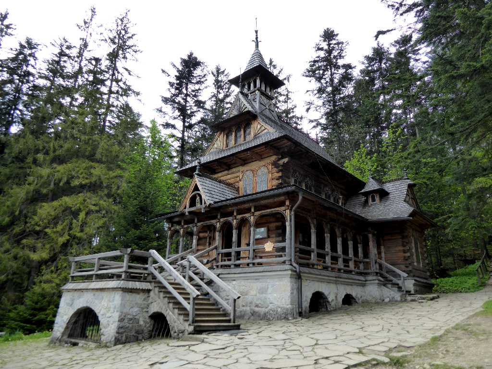
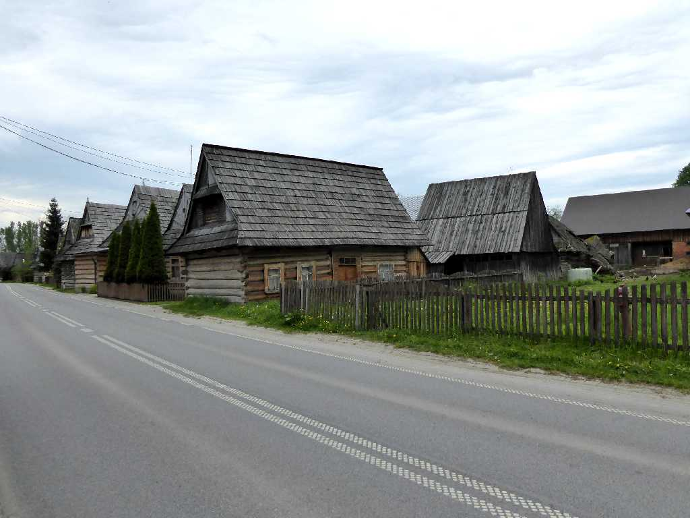
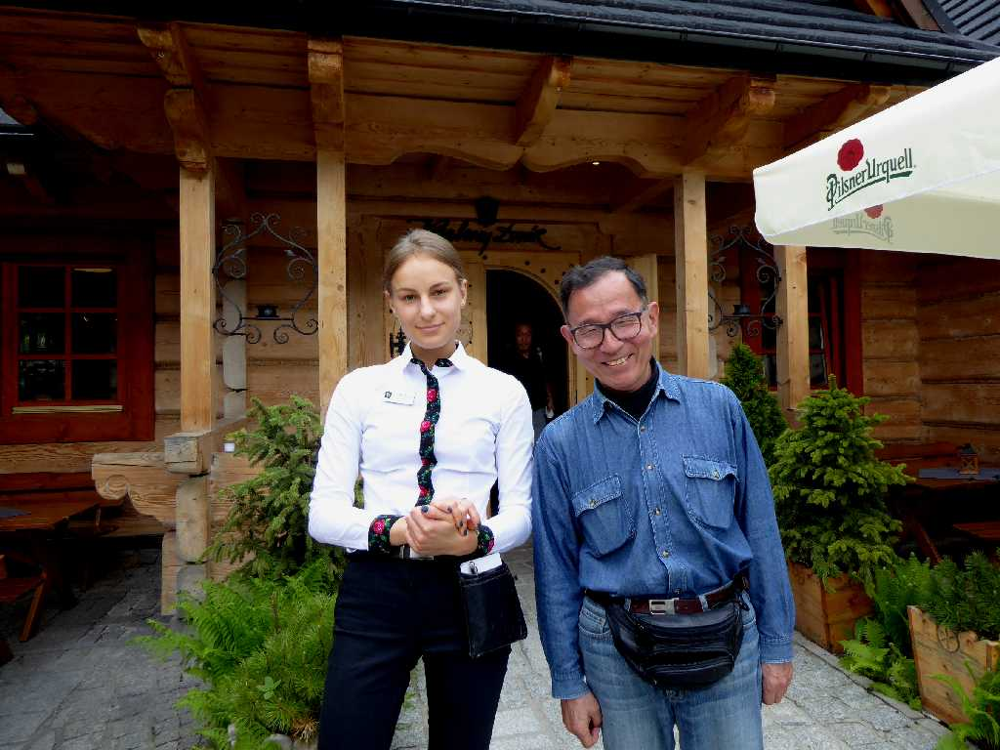

Tatry Zakopane
ポーランドとスロバキアの国境となるタトラ山脈の山麓に位置するポーランドの軽井沢ザコパネ

Sanktuarium Najświętszej Rodziny Zakopane

May 27 2019 Karcma Po Zbóju Zakopane
ポーランド料理の名店にて

Kościół Matki Bożej Częstochowskiej Zakopane

Kaplica na Jaszczurówce

Chocholowska
タトラ山脈の山麓に広がるホホウフに残る羊飼いの木造民家群

May 27 2019 Zakopane